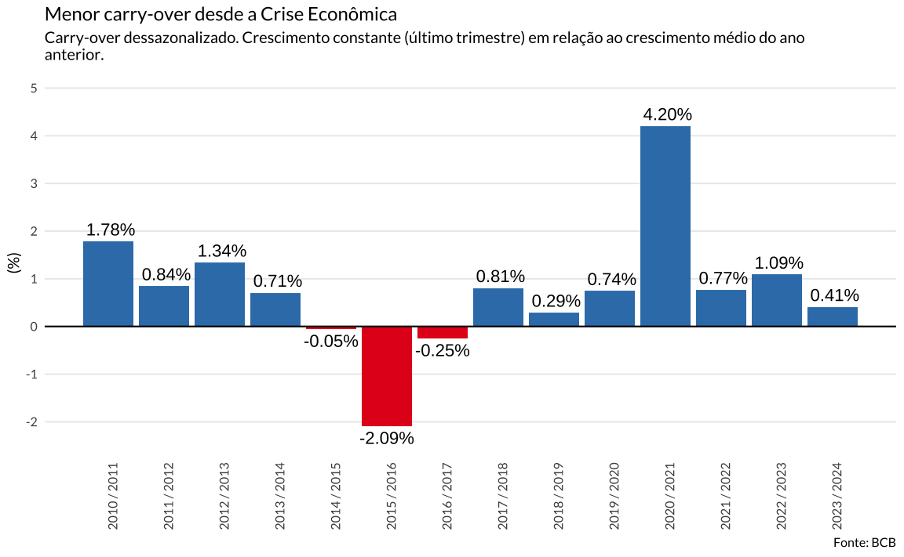

Segundo os dados mais recentes do IBGE, o carry-over do PIB de 2023 para 2024 é de apenas 0,2%, menor valor da série histórica (excluindo anos de recessão).
data-visualization
ggplot2
brasil
economia
Author
Vinicius Oike
Published
March 4, 2024
Crescimento em 2024
O carry-over estatístico de 2024 está no nível mais baixo desde a Crise Econômica de 2015-17. Isto aponta um desafio ainda maior para as metas de crescimento.

Olhando os dados históricos, é o pior carry-over desde 1995 quando se exclui os anos de recessão.
Ano
Carry-over
1996 / 1997
1.45
1997 / 1998
1.45
1998 / 1999
−0.40
1999 / 2000
1.18
2000 / 2001
1.87
2001 / 2002
−0.67
2002 / 2003
1.45
2003 / 2004
0.99
2004 / 2005
1.89
2005 / 2006
1.01
2006 / 2007
1.87
2007 / 2008
2.04
2008 / 2009
−1.60
2009 / 2010
3.49
2010 / 2011
1.78
2011 / 2012
0.84
2012 / 2013
1.34
2013 / 2014
0.71
2014 / 2015
−0.05
2015 / 2016
−2.09
2016 / 2017
−0.25
2017 / 2018
0.81
2018 / 2019
0.29
2019 / 2020
0.74
2020 / 2021
4.20
2021 / 2022
0.77
2022 / 2023
1.09
2023 / 2024
0.41
O que é o carry-over?
O carry-over ou carry-over effect mensura qual seria a variação anual do PIB caso a economia estagnasse. No caso acima, toma-se o valor do PIB no último trimestre do ano e faz-se uma simulação de crescimento zero. O PIB no último trimstre de 2023 registrou o valor (indexado) de 183,88. Supondo que o país não crescesse em 2024, o valor do PIB no último trimestre de 2024 seria também de 183,88. Comparando este valor com o PIB médio de 2023 chega-se no valor de 0,2% apontado no gráfico acima.
O carry-over é uma consequência direta da maneira como o PIB ou mais especificamente, o crescimento do PIB, costuma ser mensurado. Tipicamente, as agências de estatísticas reportam uma estimativa trimestral do PIB, que é dessazonalizada e comparada com o crescimento dos últimos quatro trimestres. Isto é, cria-se uma espeície de “ano móvel” para verificar a direção da economia. Isto significa que o crescimento anual do PIB depende da dinâmica dos quatro trimestres do ano anterior.
Source Code
---title: "Ano de 2024 começa mais difícil"date: "2024-03-04"categories: ['data-visualization', 'ggplot2', 'brasil', 'economia']description: "Segundo os dados mais recentes do IBGE, o carry-over do PIB de 2023 para 2024 é de apenas 0,2%, menor valor da série histórica (excluindo anos de recessão)."format: html: code-tools: trueexecute: echo: false warning: false message: false---```{r setup}library(rbcb)library(dplyr)library(stringr)library(ggplot2)library(showtext)font_add_google("Lato", "Lato")showtext_auto()``````{r import-series}pib =get_series(22109)``````{r data-wrangle}names(pib)[2] ="index"pib = pib |>mutate(ano = lubridate::year(date), trim = lubridate::quarter(date))#> Crescimento trimestral médio a cada anobase_index = pib |>summarise(base =mean(index), .by ="ano")#> Filtra apenas o crescimento no último trimestre do ano e compara com o crescimento#> trimestral médio do ano anterior.tbl_carry = pib |>filter(trim ==4) |>select(ano, last_index = index) |>left_join(base_index, by ="ano") |>mutate(carry_over = (last_index / base -1) *100)#> Modificações para facilitar o gráficodat = tbl_carry |>mutate(is_growth =factor(if_else(carry_over >0, 1L, 0L)),num_label =paste0(format(round(carry_over, 2), small.mark =","), "%"),text_ypos =if_else(is_growth ==1L, carry_over +0.25, carry_over -0.25) ) |>filter(ano >=2010)``````{r}p_carry_over =ggplot(dat, aes(x = ano, y = carry_over, fill = is_growth)) +geom_col() +geom_hline(yintercept =0) +geom_text(aes(y = text_ypos, label = num_label)) +scale_x_continuous(breaks =2010:2023,labels =str_glue("{2010:2023} / {2011:2024}")) +scale_y_continuous(limits =c(NA, 5), breaks =seq(-2, 5, 1)) +scale_fill_brewer(palette =6, type ="qual") +guides(fill ="none") +labs(title ="Menor carry-over desde a Crise Econômica",subtitle =str_wrap("Carry-over dessazonalizado. Crescimento constante (último trimestre) em relação ao crescimento médio do ano anterior.",111),x =NULL,y ="(%)",caption ='Fonte: BCB' ) +theme_minimal(base_size =10, base_family ="Lato") +theme(panel.grid.minor =element_blank(),panel.grid.major.x =element_blank(),axis.text.x =element_text(angle =90) )# cowplot::save_plot("static/graphics/carry_over.png")```# Crescimento em 2024O carry-over estatístico de 2024 está no nível mais baixo desde a Crise Econômica de 2015-17. Isto aponta um desafio ainda maior para as metas de crescimento.```{r}#| out-width: 90%#| fig-width: 8#| fig-asp: 0.618#| fig-dpi: 72#| fig-align: "center"p_carry_over```Olhando os dados históricos, é o pior carry-over desde 1995 quando se exclui os anos de recessão.```{r}library(gt)library(gtExtras)tbl_carry |>mutate(ano =str_glue("{ano} / {ano + 1}")) |>select(ano, carry_over) |>gt() |> gt::cols_label(ano ="Ano", carry_over ="Carry-over") |>fmt_number(2, decimals =2) |>gt_theme_538()```## O que é o carry-over?O *carry-over* ou *carry-over effect* mensura qual seria a variação anual do PIB caso a economia estagnasse. No caso acima, toma-se o valor do PIB no último trimestre do ano e faz-se uma simulação de crescimento zero. O PIB no último trimstre de 2023 registrou o valor (indexado) de 183,88. Supondo que o país não crescesse em 2024, o valor do PIB no último trimestre de 2024 seria também de 183,88. Comparando este valor com o PIB médio de 2023 chega-se no valor de 0,2% apontado no gráfico acima.O *carry-over* é uma consequência direta da maneira como o PIB ou mais especificamente, o crescimento do PIB, costuma ser mensurado. Tipicamente, as agências de estatísticas reportam uma estimativa trimestral do PIB, que é dessazonalizada e comparada com o crescimento dos últimos quatro trimestres. Isto é, cria-se uma espeície de "ano móvel" para verificar a direção da economia. Isto significa que o crescimento anual do PIB depende da dinâmica dos quatro trimestres do ano anterior.